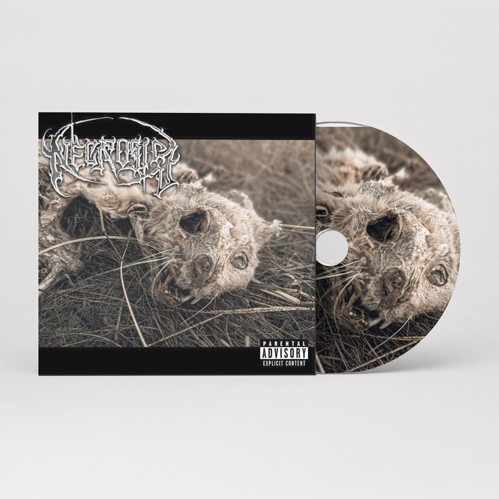

Necrosis
Diseño EditorialProyecto integral de identidad visual y diseño editorial para banda de música Necrosis. Se desarrolló logotipo distintivo, portada de disco y material promocional con estética visual cohesiva.
Disciplinas
- Diseño de Logo
- Diseño Editorial
- Branding Musical
- Diagramación
Especificaciones
- Formato: Digital & Impreso
- Año: 2024
- Resolución: 300 DPI
- Cámara: Canon R6
Tecnología
- Adobe Photoshop
- Adobe Illustrator
- Adobe InDesign
- Lightroom
Este proyecto representó un desafío creativo única al combinar elementos visuales oscuros y poderosos con una composición que capturara la esencia de la banda. La paleta de colores fue cuidadosamente seleccionada para transmitir intensidad y profesionalismo.